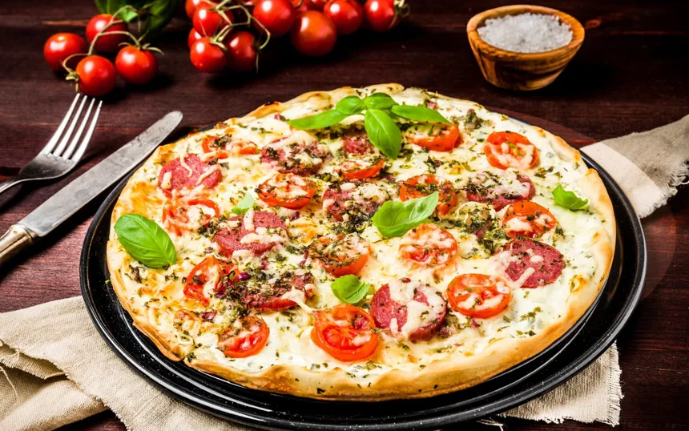

Pizza
O que é?
Pizza ou Piza é uma preparação culinária que consiste em um disco de massa fermentada de farinha de trigo,
coberto com molho de tomate e os ingredientes variados que normalmente incluem algum tipo de queijo,
carnes preparadas ou defumadas e ervas, normalmente orégano ou manjericão, tudo assado em forno.

Tipos de Pizza/Piza:
A variedade de coberturas que se pode colocar sobre uma pizza é quase infinita, entretanto, algumas
preparações são tradicionais e têm fiéis seguidores:
- Margherita: queijo mozarela, tomate italiano e folhas de manjericão (nomeada em homenagem à princesa-consorte Margarida de Saboia).
- Mozzarella: tomate, queijo mozarela, orégano e azeitonas verdes e/ou pretas;
- Portuguesa: queijo mozarela, tomate, calabresa, presunto, cebola, pimentão, ovos cozidos e azeitonas verdes e/ou pretas;
- queijo mozarela, tomate, linguiça (chouriço) calabresa, cebola e azeitonas verdes e/ou pretas;
- Toscana: tomate, queijo mozarela misturada com linguiça (chouriço) toscana moída e azeitonas verdes e/ou pretas;
- Pepperoni: tomate, queijo mozarela, rodelas de salame pepperoni e azeitonas verdes e/ou pretas;
- Quatro queijos: tomate, queijos mozarela, gorgonzola, parmesão, provolone ou catupiry, e azeitonas verdes e/ou pretas (há variações em três, cinco e seis queijos);
- Pomodoro: tomate, queijos mozarela e parmesão ralado, alho e azeitonas verdes e/ou pretas;
- Aliche ("anchova" em italiano): tomate e anchovas;[15]
- Alho: alho e azeite.